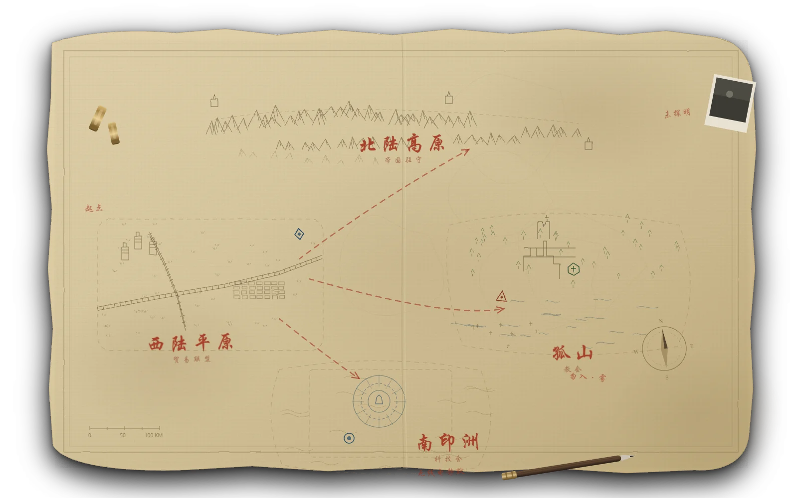

OMEGA CHRONICLE / 纪历一〇七一年
余烬纪
文明熄灭的第五年，铁轨还在响。
进入废土
继续上回（暂无存档）
读取存档
世界观 · 序章
文字冒险 · 单机 · 自动存档
剧本 1/4 已启封：西陆平原
PROLOGUE / 序章
继续
›
世界
WORLD
地区
REGION
余烬纪
OMEGA CHRONICLE · 旧大陆 四境图
已启封 · 可进入
封存中
选择一片区域 · 镜头会推近
正在测绘旧大陆
SURVEYING THE CONTINENT

1 200 KM
复位视角
地区 · REGION
维兰索尔
VALANSOR
三处地点，三段各自独立的故事。挑一处，掀开封条。
剧本杀 · 试玩版 · 可单人推进
余烬纪 · OMEGA CHRONICLE
瓦兰 西下城区
VALAN · LOWER WEST
SEAT
YOU
GATE
01
DATE
1066.06.23
ADMITTED
PASS
001
KEEP THIS STUB
点击开启，进入这段故事
维兰索尔-瓦兰 西下城区
剧本开始
demo
VALAN · LOWER WEST
进入剧本
→
返回地区
‹
维兰索尔-瓦兰 西下城区
第一幕
·
西下城区
线索
0/0
人物
说
→
‹
线索
人物
CASE FILE
‹
返回四境图
02
已启封
进入剧本
重新开始
七道调车场
21:40
档案
地图
存档
≡
点击任意处继续
SECTOR SELECT / 子地图
锈轨黄昏
西陆平原 · 纪历一〇七一年十一月六日
调查档案
保存进度
返回大地图
结局 · 一
准点到达
ON SCHEDULE
回到大地图
重开本章
档案
×
CHAPTER 01
锈轨黄昏
西陆平原 · 纪历一〇七一年